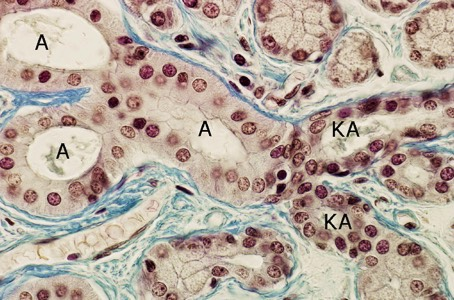
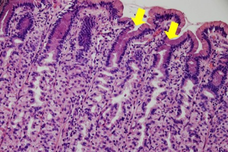

b. Afvoergangen kunnen enkelvoudig (= 1 afvoergang of directe opening naar de buitenwereld toe) of samengesteld zijn (opgebouwd als boomvormige vertakkingen). Het epitheel van afvoergangen bestaat uit kubische tot cilindrische niet-secreterende cellen, en is meestal één- of tweelagig.
Bepaal of de afvoergangen enkelvoudig of samengesteld zijn.
Bepaal of de afvoergangen enkelvoudig of samengesteld zijn.

Vanuit klierdeeltjes wordt bij deze klier het secreet eerst vervoerd in kleine afvoergangen (KA) en vervolgens verzameld in grotere afvoergangen (A). Dit is een voorbeeld van samengestelde afvoergangen.

Deze klierbuizen hebben allemaal een enkelvoudige afvoergang (pijlen) die het secreet vrijstelt in het holle orgaan.
Vordering zelfstudie klierepitheel: